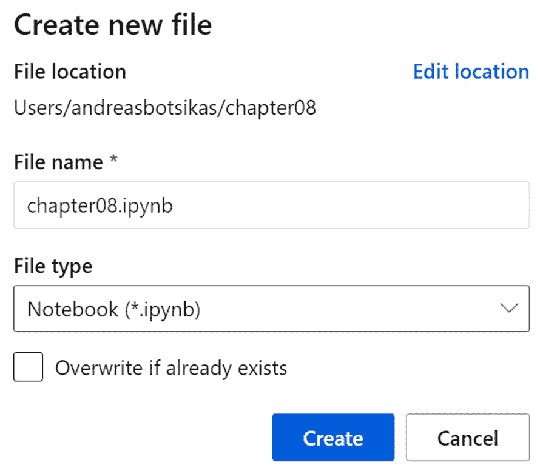

第八章:尝试 Python 代码
在本章中，你将了解如何训练scikit-learn库，也就是通常所说的sklearn。你会明白如何使用 Azure 机器学习 ( AzureML ) SDK 和 MLflow 来跟踪训练指标。然后，您将看到如何在计算集群中扩展培训流程。
在本章中，我们将讨论以下主题:
- 在笔记本电脑中训练简单的
sklearn模型 - 跟踪实验中的指标
- 利用计算集群扩展培训流程
技术要求
您需要访问 Azure 订阅。在该订阅中，您将需要一个packt-azureml-rg。你将需要一个Contributor或者OwnerT3。如果你按照第二章 、部署 Azure 机器学习工作区资源中的说明，这些资源应该已经对你可用了。
您还需要对 Python 语言有一个基本的了解。代码片段面向 Python 3.6 或更新版本。您还应该熟悉在 AzureML Studio 中使用笔记本的体验，这在前一章中已经介绍过了。
本章假设您已经在 AzureML 工作空间中注册了scikit-learn diabetes数据集，并且已经创建了一个名为cpu-sm-cluster的计算集群，如 第 7 章 、azure ml Python SDK中的定义数据存储库、使用数据集和使用计算目标部分所述。
你可以在 GitHub 的http://bit.ly/dp100-ch08找到这一章的所有笔记本和代码片段。
在笔记本电脑中训练简单的 sklearn 模型
本节的目标是创建一个 Python 脚本，该脚本将在中注册的diabetes数据集的基础上生成一个简单的模型，在 第 7 章 、AzureML Python SDK中使用数据集。该模型将获得数字输入，并预测数字输出。要创建此模型，您需要准备数据，训练模型，评估训练模型的表现，然后存储它，以便您将来能够重用它，如图图 8.1 所示:
图 8.1-产生糖尿病预测模型的过程
让我们从了解您将使用的数据集开始。diabetes数据集由 442 名diabetes患者的数据组成。每行代表一名患者。每行包含 10 个特征(target，是记录特征后 1 年diabetes疾病进展的定量测量。
您可以在 AzureML Studio 接口中进一步探索数据集，如图 8.2 所示:
图 8.2–登记的糖尿病数据集
通常在准备阶段，您加载原始数据，筛选有缺失值的行，归一化特征值，然后将数据集拆分为训练和验证数据。由于数据已经过预处理，您只需加载数据并将其分成两部分:
- Navigate to the
chapter08and then create a notebook namedchapter08.ipynb:图 8.3–创建您将要使用的第 08 章笔记本
- In the first cell of the notebook, add the following code:
from azureml.core import Workspace ws = Workspace.from_config() diabetes_ds = ws.datasets['diabetes'] training_data, validation_data =\ diabetes_ds.random_split(percentage = 0.8) X_train =\ training_data.drop_columns('target').to_pandas_dataframe() y_train =\ training_data.keep_columns('target').to_pandas_dataframe() X_validate =\ validation_data.drop_columns('target').to_pandas_dataframe() y_validate =\ validation_data.keep_columns('target').to_pandas_dataframe()在这个代码片段中，您获得了对工作区的引用，并检索了名为
diabetes的数据集。然后你用random_split()方法把它分成两个TabularDataset。第一个数据集是training_data，它包含 80%的数据，而validation_data数据集引用另外 20%的数据。这些数据集包含您想要预测的要素和标注。使用TabularDataset的drop_columns()和keep_columns()方法，您可以从label列中分离出特性。然后用TabularDataset的to_pandas_dataframe()方法将数据加载到内存中。你最终得到了四个熊猫数据帧:X_train:包含 80%的行。每行有 10 列(0到9)。y_train:包含 80%的行。每行有 1 列(target)。X_validate:包含 20%的行。每行有 10 列(0到9)。y_validate:包含 20%的行。每行有 1 列(target)。
diabetes数据集在科学文献中非常流行。它被用作训练回归模型的例子。scikit-learn库提供了一个名为sklearn.linear_model的专用模块，其中包含许多我们可以使用的线性回归模型。现在您已经准备好了数据，您的下一个任务是训练模型。 - In this step, you are going to train a
LassoLarsmodel, which is an abbreviation forLassoLarsclass accepts a float parameter namedalpha, which is known as a regularization parameter or penalty term. Its primary purpose is to protect the model from overfitting to the training dataset. Since this parameter controls the training process, it is referred to as being a hyperparameter. This parameter cannot be changed once the model has been trained. In this code block, you are instantiating an untrained model, setting0.1for thealphaparameter. In the next chapter, Chapter 9, Optimizing the ML Model, you will tune this parameter and try to locate the best value for your dataset.然后，使用
X_train和y_train数据帧来拟合()模型，这意味着您正在根据训练数据集来训练模型。在这个过程之后，model变量引用了一个经过训练的模型，您可以用它来进行预测。 - 下一个任务是根据一个度量标准评估您生成的模型。评估回归模型的最常见指标如下:
- 平均或中位数绝对误差。
- Mean squared error or log error. Another common variation of this metric is the
mean_squared_errormethod of thesklearn.metricspackage. A common issue with this metric is that a model trained on data with a larger range of values has a higher rate of error than the same model trained on data with a smaller range. You are going to use a technique called metric normalization that basically divides the metric by the range of the data. The resulting metric is known as theX_validateDataFrame. You calculate the RMSE, comparing the predictions with the ground truth stored in they_validateDataFrame. Then, you calculate the range of values (maximum minus minimum) using theptp()method of0.2.最后一步是存储训练好的模型，以便能够在将来重用它。您将创建一个名为
outputs的文件夹，并将模型保存到一个文件中。Python 对象到文件的持久化是使用joblib库的dump()方法完成的。在新的笔记本单元格中，输入以下源代码:
import os import joblib os.makedirs('./outputs', exist_ok=True) model_file_name = f'model_{nrmse:.4f}_{alpha:.4f}.pkl' joblib.dump(value=model, filename=os.path.join('./outputs/',model_file_name))如果
outputs文件夹不存在，则创建它。然后，您将模型存储在一个文件名中，该文件名包含前缀model_，后跟在步骤 4 中计算的 NRMSE 度量，再跟一个_，然后是用于实例化模型的alpha参数。您应该能够在文件浏览器中看到序列化的模型，如图 8.4 所示:
图 8.4–存储在输出文件夹中的序列化模型
您在步骤 5 中使用的命名约定有助于您跟踪模型的执行情况，并跟踪您在本次运行中使用的参数。AzureML SDK 提供了各种方法来监控、组织和管理您的训练运行，这将在下一节中探讨。
跟踪实验中的指标
当您训练一个模型时，您正在执行一个试验，您正在记录该过程的各个方面，包括诸如您需要用来比较模型性能的 NRMSE 之类的指标。AzureML 工作空间提供了实验的概念——也就是说，一个容器将这样的试验/运行组合在一起。
要创建一个新的实验，您只需要指定您将使用的工作空间，并提供一个最多包含 36 个字母、数字、下划线和破折号的名称。如果实验已经存在，您将获得对它的引用。在您的chapter08.ipynb笔记本中添加一个单元格，并添加以下代码:
from azureml.core import Workspace, Experiment ws = Workspace.from_config() exp = Experiment(workspace=ws, name="chapter08")
首先获取对现有 AzureML 工作空间的引用，然后创建chapter08实验(如果它还不存在的话)。如果您导航到 Studio 界面的资产 | 实验部分，您会注意到列表中出现一个空实验，如图 8.5 中的所示:
图 8.5–用 SDK 创建的空实验
要在chapter08实验下创建一个运行，您可以在一个新的单元格中添加以下代码:
run = exp.start_logging() print(run.get_details())
run变量让您可以访问 AzureML SDK 的Run类的一个实例，它代表一个实验的一次试验。每个run实例都有一个惟一的 ID，标识工作区中的特定运行。
重要说明
在用计算集群扩展训练过程一节中，您将使用Run类的get_context方法来获取对正在执行 Python 脚本的run实例的引用。run通常是在您提交一个脚本以在实验中执行时自动创建的。start_logging方法很少使用，只有当您想要手动创建一个run并记录度量时才使用。最常见的情况是当您使用笔记本单元训练模型时，或者当您在远程计算机(如本地计算机或 Databricks 工作空间)上训练模型时。
run类提供了丰富的日志 API。最常用的方法是通用的log()方法，它允许您使用以下代码记录指标:
run.log("nrmse", 0.01)
run.log(name="nrmse", value=0.015, description="2nd measure")
在这段代码中，为nrmse度量记录值0.01，然后为相同的度量记录值0.015，传递可选的description参数。
如果您导航到chapter08实验，您会注意到有一个run当前处于run状态，导航到指标选项卡，您将能够注意到 nrmse 指标的两个测量值，以图表或表格的形式显示，如图 8.6 所示:
图 8.6–在工作室体验中看到的 nrmse 的两个测量值
- The
log_listmethod allows you to log a list of values for the specific metric. An example of this method is the following code:run.log_list("accuracies", [0.5, 0.57, 0.62])该代码将在运行的指标部分产生图 8.7 :
图 8.7-表示使用 log_list 方法记录的三个值的图表
- The
log_tableandlog_rowmethods allow you to log tabular data. Note that, with this method, you can specify the labels in the x axis in contrast to thelog_listmethod:run.log_table("table", {"x":[1, 2], "y":[0.1, 0.2]}) run.log_row("table", x=3, y=0.3)该代码片段将在运行的指标部分产生图 8.8 :
图 8.8–使用 log_table 和 log_row 方法记录的表格度量
- 专门的方法，如
log_accuracy_table、log_confusion_matrix、log_predictions和log_residuals提供了记录数据的自定义呈现。 log_image方法允许你从众所周知的matplotlibPython 库或其他绘图库中记录图形或图像。upload_file、upload_files和upload_folder方法允许您上传实验残差并将它们与当前运行相关联。这些方法通常用于上传在run执行期间产生的各种二进制工件，例如由plotly等开源库创建的交互式 HTML 图形。
您可以选择创建子运行来隔离试验的子部分。子运行记录它们自己的指标，您也可以选择登录父运行。例如，下面的代码片段创建了一个子运行，记录了一个名为child_metric的指标(仅在该运行中可见)，然后记录了父运行的指标metric_from_child:
child_run = run.child_run()
child_run.log("child_metric", 0.01)
child_run.parent.log("metric_from_child", 0.02)
一旦你完成了运行，你需要改变它的运行状态。您可以使用以下方法之一:
complete方法表示运行已成功完成。该方法还将outputs文件夹(如果存在的话)上传到runs工件，而不需要显式调用Run类的upload_folder方法。cancel方法表示作业被取消。您会注意到在 AutoML 实验中运行被取消，因为已达到超时期限。- 不推荐使用的
fail方法表示发生了错误。
下面的代码片段取消子运行并完成根运行，打印状态，应该显示为 Completed :
child_run.cancel() run.complete() print(run.get_status())
在本节中，您了解了 AzureML 的日志功能。在下一节中，您将重构您在在笔记本中训练简单 sklearn 模型一节中创建的代码，并添加日志记录功能。
追踪模式演变
在前面的部分中，您可能已经注意到，您在本章的在笔记本部分中训练一个简单的 sklearn 模型中创建的outputs文件夹在您执行complete方法时被自动上传到运行中。为了避免上传那些过时的工件，你需要删除outputs文件夹:
- 在您的
chapter08.ipynb笔记本中添加一个单元格，并使用下面的代码片段删除outputs文件夹:import shutil try: shutil.rmtree("./outputs") except FileNotFoundError: pass - As a next step, you will refactor the training and evaluation code to a single method, passing in the
alphaparameter and thetrainingandvalidationdatasets:from sklearn.linear_model import LassoLars from sklearn.metrics import mean_squared_error def train_and_evaluate(alpha, X_t, y_t, X_v, y_v): model = LassoLars(alpha=alpha) model.fit(X_t, y_t) predictions = model.predict(X_v) rmse = mean_squared_error(predictions, y_v, squared = False) range_y_validate = y_v.to_numpy().ptp() nrmse = rmse/range_y_validate print(f"NRMSE: {nrmse}") return model, nrmse trained_model, model_nrmse = train_and_evaluate(0.1, X_train, y_train, X_validate, y_validate)这段代码与您在笔记本部分中编写的代码完全相同。现在，您可以使用
train_and_evaluate并为alpha参数传递不同的值来训练多个模型，这个过程被称为超参数调整。在该代码片段的最后一行，您可以获得对最终训练模型及其 NRMSE 度量的引用。重要说明
如果您得到如下错误:
NameError: name 'X_train' is not defined，您将需要重新运行笔记本中定义了X_train、y_train、X_validate和y_validate变量的单元格。这表明 Python 内核已经重新启动，并且所有变量都已经从内存中丢失。到目前为止，您已经重构了现有代码，并保持了相同的功能。要通过您在上一节中探索的
Run类启用日志记录，您需要将对当前运行实例的引用传递给train_and_evaluate方法。 - 在新的单元格中，添加下面的代码片段，它将覆盖现有的
train_and_evaluate方法声明:def train_and_evaluate(
logandlog_rowmethods to log the NRMSE metric of the trained model.重要说明
如果您不能键入前面示例中显示的字母 α ，您可以使用 a 字符来代替。
- Having this
train_and_evaluatemethod, you can do a hyperparameter tuning and train multiple models for multiple values of theα(alpha) parameter, using the following code:from azureml.core import Workspace, Experiment ws = Workspace.from_config() exp = Experiment(workspace=ws, name="chapter08") with exp.start_logging() as run: print(run.get_portal_url()) for a in [0.001, 0.01, 0.1, 0.25, 0.5]: train_and_evaluate(run, a, X_train, y_train, X_validate, y_validate)
注意，我们没有调用
complete方法，而是使用了with .. asPython 设计模式。随着run变量移出范围，它会自动标记为完成。 - 使用步骤 4 中的
get_portal_url，您打印了工作室的log方法调用的链接，而α(alpha)参数是您使用log_row方法记录的。您应该会看到类似于图 8.9 所示的图表:
图 8.9–糖尿病模型的 nrmse 指标的演变
重要说明
在本节中，您只是在Run实例上存储指标，而不是实际训练的模型。您可以通过生成.pkl文件来存储生成的模型，然后使用upload_file方法将它上传到运行的工件中。在 第 12 章 ，用代码操作化模型中，您将了解 AzureML SDK 的模型注册功能，它提供了跟踪实际模型的卓越体验。
在本节中，您看到了如何使用 AzureML SDK 启用度量日志记录。说到跟踪实验指标，数据科学界正在使用一个流行的开源框架 MLflow。在下一节中，您将了解如何使用该库来跟踪 AzureML 工作空间中的指标。
使用 MLflow 跟踪实验
MLflow 库是一个受欢迎的开源库，用于管理数据科学实验的生命周期。这个库允许您在本地或服务器上存储工件和度量。AzureML 工作区提供了一个 MLflow 服务器，您可以使用它来执行以下操作:
- 通过 MLflow 跟踪组件跟踪和记录实验指标。
- 通过 MLflow 项目组件在 AzureML 计算集群上编排代码执行(类似于你将在 第 11 章 、中看到的管道使用管道)。
- 管理 AzureML 模型注册中心的模型，你会在第十二章中看到用代码操作化模型。
在本节中，您将重点关注用于跟踪指标的 MLflow 跟踪组件。下面的代码片段使用MLflow库来跟踪您在前一节中在名为chapter08-mlflow的实验下创建的diabetes模型的参数和指标:
import mlflow
def train_and_evaluate(alpha, X_t, y_t, X_v, y_v):
model = LassoLars(alpha=alpha)
model.fit(X_t, y_t)
predictions = model.predict(X_v)
rmse = mean_squared_error(predictions, y_v, squared = False)
range_y_validate = y_v.to_numpy().ptp()
nrmse = rmse/range_y_validate
mlflow.log_metric("nrmse", nrmse)
return model, nrmse
mlflow.set_experiment("chapter08-mlflow")
with mlflow.start_run():
mlflow.sklearn.autolog()
trained_model, model_nrmse = train_and_evaluate(0.1,
X_train, y_train,
X_validate, y_validate)
MLflow Tracking 组件的最广为人知的特性之一是它提供的自动记录功能。在您的训练代码之前调用mlflow.sklearn.autolog()方法能够自动记录sklearn度量、参数和生成的模型。类似于针对sklearn的autolog方法，有针对大多数常见训练框架的包，比如 PyTorch、fast.ai、Spark 等等。
使用log_metric方法，您显式地要求 MLflow 库记录一个指标。在这种情况下，您将记录 NRMSE 度量，自动记录功能不会自动捕获该度量。
正如您在图 8.10 中看到的，MLflow 跟踪组件在笔记本旁边的mlruns文件夹下的文件夹结构中记录所有工件和训练模型:
图 8.10–使用 MLflow 跟踪组件的本地文件存储模式跟踪指标
这是的默认设置，简称local FileStore。您可以将 AzureML workspace 用作远程跟踪服务器。为此，你需要使用mlflow.set_tracking_uri()方法连接到一个跟踪 URI。
要启用 MLflow 到 AzureML 的集成，您需要确保您的环境具有azureml-mlflow Python 库。此包已经存在于 AzureML 计算实例中。如果您在 Databricks 工作空间上工作，您将需要使用pip install azureml-mlflow命令手动安装它。
要获得跟踪 URI 并使用 AzureML 作为远程跟踪服务器运行相同的实验，请使用以下代码片段:
import mlflow
from azureml.core import Workspace
ws = Workspace.from_config()
mlflow.set_tracking_uri(ws.get_mlflow_tracking_uri())
mlflow.set_experiment("chapter08-mlflow")
with mlflow.start_run():
mlflow.sklearn.autolog()
trained_model, model_nrmse = train_and_evaluate(0.1,
X_train, y_train,
X_validate, y_validate)
Workspace类的get_mlflow_tracking_uri方法返回一个 1 小时内有效的 URL。如果您的实验花费了一个多小时来完成，您将需要生成一个新的 URI，并使用set_tracking_uri方法对其赋值，如前面的代码片段所示。
您应该能够在 Studio 体验中看到运行和跟踪的指标，如图 8.11 所示:
图 8.11–使用 MLflow 库和 AzureML 作为远程跟踪服务器记录的指标
到目前为止，您已经在 AzureML 工作空间中使用了计算实例，并且在笔记本内核中训练了 ML 模型。这种方法适用于小模型或基于样本数据的快速原型。在某些情况下，您将需要处理要求更高的工作负载，要么需要更大的内存，要么甚至需要在多个计算机节点上进行分布式培训。这可以通过将培训流程委托给您在第 4 章 、配置工作空间中创建的计算集群来实现。在下一节中，您将学习如何在 AzureML 计算集群中执行 Python 的脚本。
利用计算集群扩展培训流程
在 第七章 ，AzureML Python SDK中，你创建了一个名为cpu-sm-cluster的计算集群。在这个部分，您将提交一个要在该集群上执行的培训作业。为此，您需要创建一个将在远程计算目标上执行的 Python 脚本。
导航到目前为止您一直使用的chapter08文件夹下的greeter-job。添加一个名为greeter.py的 Python 文件:
图 8.12–添加要在远程计算集群上执行的简单 Python 脚本
import argparse
parser = argparse.ArgumentParser()
parser.add_argument('--greet-name', type=str,
dest='name', help='The name to greet')
args = parser.parse_args()
name = args.name
print(f"Hello {name}!")
这个脚本使用来自argparse模块的ArgumentParser类来解析传递给脚本的参数。它试图定位一个--greet-name参数，并将发现的值赋给它返回的对象的name属性(args.name)。然后，它为给定的名字打印一条问候消息。要尝试该脚本，请打开终端并键入以下内容:
python greeter.py --greet-name packt
该命令将产生如图 8.13 所示的输出:
图 8.13–测试您将在远程计算上执行的简单脚本
为了在远程计算集群上执行这个简单的 Python 脚本，返回到chapter08.ipynb笔记本，添加一个新的单元格，并键入以下代码:
from azureml.core import Workspace, Experiment from azureml.core import ScriptRunConfig ws = Workspace.from_config() target = ws.compute_targets['cpu-sm-cluster'] script = ScriptRunConfig( source_directory='greeter-job', script='greeter.py', compute_target=target, arguments=['--greet-name', 'packt'] ) exp = Experiment(ws, 'greet-packt') run = exp.submit(script) print(run.get_portal_url()) run.wait_for_completion(show_output=True)
- 获取一个对工作空间的引用,然后将一个对
cpu-sm-cluster集群的引用赋给target变量。 - 创建一个
ScriptRunConfig来执行位于greeter-job文件夹中的greeter.py脚本。这个脚本将在传递了--greet-name和packt参数的target计算中执行，这两个参数将被连接起来，中间有一个空格。 - 创建一个名为
greet-packt的实验，您提交脚本配置以在这个实验下执行。方法submit创建了一个新的Run实例。 - You use the
get_portal_urlmethod to get the portal URL for the specificRuninstance. You then call thewait_for_completionmethod, setting theshow_outputparameter toTrue. To wait for the run to complete, turn on verbose logging and print the logs in the output of the cell.重要说明
在 AzureML SDK 的第一个版本中，您应该使用
Estimator类，而不是ScriptRunConfig，这是不推荐的。此外，对于特定的框架，有一些不推荐使用的专门的Estimator类，比如提供运行 TensorFlow 特定代码的方法的TensorFlow类。这种方法已经被弃用，取而代之的是您将在接下来的理解执行环境部分中读到的环境。尽管如此，这些被否决的类的语法和参数与ScriptRunConfig非常相似。您应该能够毫无问题地阅读不推荐使用的代码。如果你在认证考试中看到一个老问题提到了这些被否决的类，请记住这一点。
您已经成功地完成了一次运行的远程执行。在下一节中，您将探索刚刚完成的运行的日志，并更好地理解 AzureML 的机制。
探索运行的输出和日志
在这一部分，您将探索在使用计算集群部分执行的远程执行的输出。这将让您深入了解 AzureML 平台是如何工作的，并帮助您解决在开发培训脚本时可能会遇到的错误。
使用get_portal_url方法打开您在前面部分打印的链接，或者导航到greet-packt实验，并打开运行 1 。导航到运行的输出+日志选项卡:
图 8.14–实验运行的输出+日志选项卡
这些输出对于排除潜在的脚本错误非常有帮助。azureml-logs文件夹包含平台日志。这些文件中的大部分是来自底层引擎的日志。包含脚本标准输出的日志是70_driver_log.txt。这是您需要首先查看的日志文件，以便对潜在的脚本执行失败进行故障排除。如果你有多个进程，你会看到多个带有数字后缀的文件，比如70_driver_log_x.txt。
logs文件夹是一个特殊的文件夹，您可以在脚本中使用它来输出日志。脚本在该文件夹中写入的所有内容都将自动上传到您在跟踪实验中的指标部分看到的运行的outputs文件夹中。AzureML 还输出你在图 8.14 中看到的azureml文件夹下的系统日志。
导航到ScriptRunConfig。该目录最多可包含 300 MB 和 2，000 个文件。如果需要更多脚本文件，可以使用数据存储。如果您编辑了.py脚本中的脚本文件和一个.amltmp文件，该文件是笔记本编辑器使用的临时文件:
图 8.15–快照中上传的临时文件
为了避免创建不想要的文件的快照，您可以在脚本旁边的文件夹中添加一个.gitignore或.amlignore文件，并排除那些遵循特定模式的文件。导航到greeter-job文件夹中的.amlignore文件，如果创建文件夹时该文件尚未添加，如图图 8.16 所示:
图 8.16–添加。用于排除临时文件添加到快照的 amlignore 文件
打开.amlignore文件，在其中添加以下行，以排除所有扩展名为. a mltmp文件的文件和您正在编辑的.amlignore文件:
*.amltmp .amlignore
打开chapter08.ipynb笔记本，添加一个单元格，并添加以下代码以重新提交脚本:
from azureml.widgets import RunDetails run = exp.submit(script) RunDetails(run).show()
您正在重新提交您在上一步中创建的ScriptRunConfig的现有实例。如果你再次重启exp和script变量。
这一次，您将使用 AzureML SDK 提供的RunDetails小部件。这是一个JupyterT3】笔记本 widget 用来查看一个脚本执行的进度。这个小部件是异步的，在运行结束之前一直提供更新。
如果要打印运行状态，包括日志文件的内容，可以使用下面的代码片段:
run.get_details_with_logs()
运行完成后，导航到该运行的快照选项卡。您会注意到临时文件不见了。
请注意，这次运行的执行花费的时间要少得多。导航到运行日志。注意这次日志中没有出现20_image_build_log.txt文件，如图图 8.17 所示:
图 8.17–更快的运行执行和缺少 20_image_build_log.txt 文件
这是用于执行脚本的环境的 Docker 映像构建日志。这是一个非常耗时的过程。这些图像被构建并存储在与 AzureML 工作空间一起部署的容器注册表中。由于您没有修改执行环境，AzureML 在后续运行中重用了之前创建的映像。在下一节中，您将更好地理解什么是环境以及如何修改它。
了解执行环境
在 AzureML 工作空间术语中，环境意味着执行脚本所需的软件需求的列表。这些软件要求包括以下内容:
- 您的代码需要安装的 Python 包
- 代码中可能需要的环境变量
- 各种辅助软件，如 GPU 驱动程序或 Spark 引擎，它们可能是代码正常运行所必需的
环境是由管理的和版本化的实体，支持跨不同计算目标的可复制、可审计和可移植的 ML 工作流。
AzureML 提供了一个由AzureML-Minimal管理的环境列表，其中包含了最小的 Python 包需求，以支持您在跟踪模型演化部分看到的运行跟踪。另一方面，AzureML-AutoML环境是一个更大的管理环境，为您的脚本提供了运行 AutoML 实验所需的 Python 包。
重要说明
AzureML 服务不断更新，旧的环境被弃用，取而代之的是新的环境。即使在 AzureML Studio 的 web 界面中看不到AzureML-Minimal和AzureML-AutoML环境，它们也应该可供您使用。如果遇到任何错误，请从本章的 GitHub 库下载最新代码。
在图 8.18 中，您可以看到AzureML-AutoML环境与极简AzureML-Minimal环境相比有多少额外的软件包可用:
图 8.18–azure ml-Minimal 和 AzureML-AutoML 环境之间的 Python 包差异
图 8.18 显示了AzureML-Minimal环境版本 46 与AzureML-AutoML环境版本 61 的Conda 环境定义。Conda获取这个 YAML 文件并安装 Python 版本 3.6.2 和- pip:符号下面列出的pip需求。正如您所注意到的，所有的pip包都有使用==x.x.x符号定义的特定版本。这意味着，每次使用这个 YAML 文件时，都会安装相同的 Python 包，这有助于为实验的可重复性保持一个稳定的环境。
创建环境时安装软件包是一个耗时的过程。这就是您在上一节中看到的 Docker 技术派上用场的地方。Docker 是一个开源项目，用于将应用程序自动部署为可移植的、自给自足的容器。这意味着不用在每次运行脚本时都创建一个新的环境，而是可以创建一个 Docker 容器映像，也称为 Docker 映像，其中所有 Python 依赖项都在映像的中烘焙一次。您可以从那时起重用该映像来启动一个容器并执行您的脚本。事实上，所有 AzureML 管理的环境都可以作为 Docker 映像在viennaglobal.azurecr.io容器注册表中获得。
重要说明
尽管为您的环境创建 Docker 映像很常见，但这并不总是必需的。如果在本地计算机或 AzureML 计算实例上运行实验，可以使用现有的Conda环境，避免使用 Docker 映像。如果您计划使用一个远程计算，例如一个 AzureML 计算集群，那么 Docker 映像是必需的，因为否则，您无法确保所提供的机器将拥有代码执行所需的所有软件组件。
为了更好地理解你到目前为止读到的内容，你将使用AzureML-Minimal环境重新运行前面的greeter.py脚本:。
- In your notebook, add a new cell and add the following code:
from azureml.core import Environment minimal_env =\ Environment.get(ws, name="AzureML-Minimal") print(minimal_env.name, minimal_env.version) print(minimal_env.Python.conda_dependencies.serialize_to_string())
这段代码检索由
ws变量引用的 AzureML 工作空间中定义的AzureML-Minimal环境，该环境在笔记本中的前面被初始化。然后，它打印环境的名称和版本以及您在图 8.18 中看到的Conda环境 YAML 定义。 - 添加一个新的单元格，并键入以下内容:
from azureml.core import Experiment, ScriptRunConfig target = ws.compute_targets['cpu-sm-cluster'] script = ScriptRunConfig( source_directory='greeter-job', script='greeter.py',
environmentargument in theScriptRunConfigconstructor.
观察运行执行的输出。如果你仔细看，你会看到下面一行:
Status: Downloaded newer image for viennaglobal.azurecr.io/azureml/azureml_<something>:latest
这一行是azureml-logs中55_azureml-execution-something.txt文件的一部分。这一行通知您它正在从viennaglobal容器注册中心提取一个 Docker 映像，该注册中心属于微软。与此相反，在前面的部分中，在没有指定管理环境的运行中，图像是从您自己的容器注册表中提取的——与您的 AzureML 工作空间一起提供的那个，如图 8.19 中的所示:
图 8.19–在执行过程中从您自己的容器注册表中提取的图像，没有使用管理环境
这一观察将我们带到了下一种 AzureML 支持的环境，即系统管理的环境——这将在下一节中探讨。
定义系统管理的环境
S Conda环境定义或者一个简单的pip requirements.txt文件。在上一节中，您没有在ScriptRunConfig构造函数中定义environment参数，而是使用一个默认的Conda环境定义文件来创建系统管理的环境，该环境存储在与 AzureML 工作空间相关联的 Azure 容器注册表中。让我们明确地创建一个系统管理的环境来使用您的代码:
- 导航到 AzureML 工作区的笔记本部分和文件树形视图。
- Click on the three dots of the
greeter-jobfolder to open the context menu (or just right-click on the name) and select thegreeter-banner-job, as seen in the following screenshot:
图 8.20–将迎宾-工作文件夹复制为一个名为迎宾-横幅-工作的新文件夹
- 打开新文件夹中的
greeter.py文件，将代码改为:import argparse
Bannermethod from theasciistuffopen source Python package. This method is used in the last print. This will output a fancyosmodule, which allows you to read the environment variables using theos.environ.get()method. The code tries to read the environment variable namedGREET_HEADER, and if it is not defined, the default value,Message:, is assigned to thegreet_headervariable, which is printed before the banner message.重要说明
如果您试图在 AzureML 计算实例的终端中执行修改后的
greeter.py，它将会失败，因为您没有安装asciistuff包。要在您的计算实例中安装它，您可以使用pip install asciistuff命令。 - The
asciistuffpackage is a pip package that you will need to install in your executing environment for your code to work. To define that code dependency, you are going to create aCondaenvironment definition file. In thechapter08folder, add a new file namedgreeter-banner-job.yml. Add the following content to it:name: banner-env dependencies: - python=3.6.2 - pip: - asciistuff==1.2.1
这个 YAML 文件定义了一个新的
Conda环境，命名为banner-env，基于 Python 版本 3.6.2 ，安装了pip包asciistuff的 1.2.1 版本。 - To create an AzureML environment based on the
Condaenvironment you just defined, you need to go to thechapter08.ipynbnotebook, add a cell, and type the following code:from azureml.core import Environment banner_env = Environment.from_conda_specification( name = "banner-env", file_path = "greeter-banner-job.yml") banner_env.environment_variables["GREET_HEADER"] = \ "Env. var. header:"
这段代码使用
Environment类的from_conda_specification()方法创建了一个名为banner-env的 AzureML 环境。banner_env变量包含新定义的环境。在后续行中，您定义了GREET_HEADER环境变量，并分配了Env. var. header:值。这个环境没有在工作区中注册，它不需要注册就可以使用。如果您确实希望将它保存在工作区中，以便能够以引用管理的环境的相同方式引用它，并且您希望保留它的版本，那么您可以使用register()方法，使用banner_env.register(ws)代码，其中您作为参数传递一个变量，该变量指向将注册环境的工作区。重要说明
如果您计划在本地计算机上开始工作，然后在更强大的计算集群上扩展，那么您应该考虑创建并注册一个系统管理的环境，其中包含您所需的所有 Python 包。这将允许您在本地和远程执行中重用它。
- 要使用这个新定义的环境，在笔记本中添加一个新的单元格，并键入以下代码:
script = ScriptRunConfig( source_directory='
ScriptRunConfig::
该实验的输出应该类似于图 8.21 中所示:
图 8.21–从环境变量中读取的标题文本和基于横幅的问候
正如您注意到的，在您刚刚创建的系统管理的环境中，您没有指定任何关于基本操作系统的内容(例如，它的Conda是否已经安装在基本系统中。您只是指定了安装的Conda依赖项。如果您想要更大的灵活性，您可以显式地配置环境并手动安装所有的软件需求。这些环境被称为用户管理的环境。通常，这些用户管理的环境是定制的 Docker 映像，封装了所有必需的依赖项。例如，您可能需要 PyTorch 框架的定制版本，甚至是 Python 的定制版本。在这些情况下，您负责安装 Python 包并配置整个环境。出于本书的目的，您将使用管理的或系统管理的环境。
到目前为止，您已经探索了如何在远程计算机上执行简单的 greeter Python 应用程序。在下一节中，您将继续您的diabetes模型训练并了解如何在远程计算集群上训练该模型。
在计算集群上训练糖尿病模型
在前面的部分中，您学习了如何通过从笔记本中调用exp.submit(script)方法在远程计算集群上运行脚本，如图图 8.22 所示:
图 8.22–在计算集群上执行脚本
当您调用submit方法时，以下动作在幕后发生:
- AzureML SDK 进行了一次
ScriptRunConfig执行。 - AzureML 工作区检查了
Environment的 Docker 图像是否已经存在。如果它不存在，它是在 Azure Container Registry 中创建的。 - 该作业被提交给计算集群，该集群可以扩展以分配一个计算节点。在新分配的计算节点中执行以下操作:
- 带有环境的 Docker 映像被拉至计算节点。
ScriptRunConfig引用的脚本加载在正在运行的 Docker 实例中。- 指标和元数据存储在 AzureML 工作空间中。
- 输出存储在存储帐户中。
在使用笔记本培训简单的 sklearn 模型部分，您在chapter08.ipynb笔记本中创建了一个培训脚本。培训发生在 Jupyter 服务器的进程中，在您的计算实例中。要在计算集群中运行相同的培训，您需要执行以下操作:
- 将代码移动到 Python 脚本文件中。
- 创建一个 AzureML 环境来运行培训。
- 在实验中提交。
在接下来的小节中，您将看到如何转换您在跟踪模型演进小节中使用的脚本，以便能够在远程计算集群上执行它。
将代码移动到 Python 脚本文件中
如果您查看您在跟踪模型演进部分创建的脚本，在进行培训的代码中，您使用了run变量来记录指标。这个变量引用了您在调用exp.start_logging()时得到的Run对象。在上一节中，您了解了在实验中提交的ScriptRunConfig，并返回了Run类的一个实例。该实例是在计算实例的笔记本中创建的。在远程集群上执行的脚本文件如何访问同一个Run对象？
AzureML 的Run类提供了一个名为get_context()的方法，返回当前的服务执行上下文。在ScriptRunConfig的例子中，这个执行上下文与您调用exp.submit(script)时创建的Run相同:
from azureml.core.run import Run run = Run.get_context()
除了run变量之外，在训练脚本中，还有ws变量，它是对 AzureML 工作空间的引用。您使用该变量来访问diabetes数据集。您通过调用from_config方法获得了对工作区的引用。这种方法的问题是，第一次调用该方法时，您需要手动验证并授权计算机代表您访问工作区。这在远程计算上是不可行的。
通过在实验属性中导航，然后导航到该实验的工作区属性，run变量使您能够访问相应的工作区:
ws = run.experiment.workspace
不过，对于这些代码行，有一个警告。您的代码假设 Python 脚本通过ScriptRunConfig提交。如果您在终端中本地运行 Python 脚本，使用以下命令行，您将得到一个错误:
python training.py --alpha 0.1
get_context()方法将返回一个_OfflineRun类的对象，它继承自Run类。这个类提供了您在实验中的跟踪度量部分看到的所有日志记录功能，但是它没有将度量或者工件上传到工作区，而是在终端中打印出尝试。显然，没有与该运行相关的实验，这将导致脚本抛出一个错误。因此，您需要使用到目前为止一直使用的from_config()方法来检索工作空间引用。由于终端是计算实例的一部分，脚本将执行传递您的凭证，而不会提示您进行身份验证，您将在本节的后面看到这一点。如果您在本地计算机上运行这段代码，您将需要对您的设备进行身份验证，正如您在第 7 章 、AzureML Python SDK的 部分的从您的设备进行身份验证中所看到的。
允许您在终端中脱机运行和在计算集群中提交的完整代码如下:
from azureml.core import Workspace from azureml.core.run import Run, _OfflineRun run = Run.get_context() ws = None if type(run) == _OfflineRun: ws = Workspace.from_config() else: ws = run.experiment.workspace
这些是您需要对您的脚本进行的唯一的更改，以提交它用于远程执行并利用 AzureML SDK 功能。
重要说明
Python 开发人员通常使用一个_作为他们想要标记为内部的类、属性或方法的前缀。这意味着标记的代码是供SDK库中的类使用的，不应该被外部开发人员使用。标记的代码将来可能会在没有任何警告的情况下更改。使用以_前缀开头的类被认为是一种不好的做法。尽管如此，_OfflineRun类在 AzureML SDK 的公共示例中被广泛使用，并且可以安全使用。
让我们在您的工作区中进行这些更改。在文件树中，在chapter08下创建一个名为diabetes-training的文件夹，并在其中添加一个training.py文件，如图图 8.23 所示:

图 8.23–为远程糖尿病模型培训创建培训脚本
在training.py脚本中添加以下代码块。您可以直接从本章的技术需求一节中提到的 GitHub 库下载这些代码，而不是键入所有这些代码:
from sklearn.linear_model import LassoLars from sklearn.metrics import mean_squared_error from azureml.core import Workspace from azureml.core.run import Run, _OfflineRun import argparse import os import joblib
这些是脚本文件中需要的所有导入。将所有的import语句放在脚本文件的顶部是一个很好的做法，这样可以很容易地发现代码正确执行所需的模块。如果您使用flake8来 lint 您的代码库，如果您不遵循这个最佳实践，它将会抱怨:
parser = argparse.ArgumentParser()
parser.add_argument('--alpha', type=float,
dest='alpha', help='The alpha parameter')
args = parser.parse_args()
这个脚本文件需要一个--alpha参数传递给它。在这个代码块中，使用您在使用计算集群部分看到的argparse模块解析这个参数，并且将float值赋给args.alpha变量，因为它是在dest参数中指定的。如果您向脚本传递未定义的参数，parse_args方法将抛出错误。有些人更喜欢使用args, unknown_args = parser.parse_known_args()而不是这个代码块的第四行，这允许脚本执行，即使它收到的参数比预期的多，在unknown_args变量中分配未知的参数:
run = Run.get_context() ws = None if type(run) == _OfflineRun: ws = Workspace.from_config() else: ws = run.experiment.workspace
在这个代码块中，您使用在本节开始时看到的代码片段获得了对Run对象和Workspace的引用。一旦获得了对Workspace的引用，就可以加载diabetes数据集，如下一个脚本块所示:
diabetes_ds = ws.datasets['diabetes']
training_data, validation_data = \
diabetes_ds.random_split(
percentage = 0.8, seed=1337)
X_train = training_data.drop_columns('target') \
.to_pandas_dataframe()
y_train = training_data.keep_columns('target') \
.to_pandas_dataframe()
X_validate = validation_data.drop_columns('target') \
.to_pandas_dataframe()
y_validate = validation_data.keep_columns('target') \
.to_pandas_dataframe()
在这个模块中，您将获得一个对diabetes数据集的引用，并将其拆分为所需的X_train、y_train、X_validate和y_validate熊猫数据帧，您在本章的在笔记本部分中培训一个简单的 sklearn 模型时看到了这些数据帧。注意，您在random_split方法中指定了seed参数。这个seed参数用于初始化由split方法使用的底层随机函数的状态，以便从数据集中随机选择行。通过这样做，随机函数将在每次被调用时生成相同的随机数。这意味着每次运行脚本时,training_data和validation_data都是相同的。拥有相同的训练和验证数据集将有助于正确比较具有不同alpha参数的相同脚本的多次执行:
def train_and_evaluate(run, alpha, X_t, y_t, X_v, y_v):
model = LassoLars(alpha=alpha)
model.fit(X_t, y_t)
predictions = model.predict(X_v)
rmse = mean_squared_error(predictions,y_v,squared=False)
range_y_validate = y_v.to_numpy().ptp()
nrmse = rmse/range_y_validate
run.log("nrmse", nrmse)
run.log_row("nrmse over α", α=alpha, nrmse=nrmse)
return model, nrmse
在这个代码块中，您定义了train_and_evaluate方法，这与本章的跟踪模型演化部分中使用的方法相同:
model, nrmse = train_and_evaluate(run, args.alpha, X_train, y_train, X_validate, y_validate)
os.makedirs('./outputs', exist_ok=True)
model_file_name = 'model.pkl'
joblib.dump(value=model, filename=
os.path.join('./outputs/',model_file_name))
最后一个代码块将模型存储在脚本位置旁边的outputs文件夹中。
您可以在本地计算实例上运行该脚本，您会注意到模型按照预期进行了训练，并且指标被记录在终端中，如图 8.24 中的所示。这是您之前读到的_OfflineRun类的预期行为:
图 8.24–在本地运行训练脚本
到目前为止，您已经创建了培训脚本。在下一节中，您将创建 AzureML 环境，该环境将包含在远程计算上执行该脚本所需的所有依赖项。
创建 AzureML 环境来运行培训脚本
您在跟踪模型演化部分创建的训练脚本使用了scikit-learn库，也称为sklearn。你在笔记本体验中使用的 Jupyter 内核已经安装了sklearn库。要查看当前安装在内核中的版本，请转到chapter08.ipynb笔记本，并在新的单元格中添加以下代码片段:
!pip show scikit-learn
该命令将使用 Python 的pip包管理器来显示当前安装的scikit-learn包的详细信息，如图图 8.25 所示:
图 8.25–已安装的 scikit-learn 库的包信息
重要说明
如果不确定库名，可以使用pip freeze命令获得当前 Python 环境中已安装的包的完整列表。
您还可以使用sklearn.__version__属性在 Python 脚本中找到已安装库的版本(注意两个下划线)。在新的笔记本单元格中，添加以下几行 Python 代码:
import sklearn print(sklearn.__version__)
您应该能够在输出中看到完全相同的版本。大多数 Python SDKs 和库都有这个__version__属性，比如 PyTorch 和 TensorFlow 框架。
有两种方法安装scikit-learn包；作为Conda套装或pip套装。Conda提供了 Python 包的精选列表，这是推荐的方法。在理解执行环境部分，您看到了如何使用Conda规范文件创建环境。在本节中，您将学习一种不同的方法，在 Python 代码中创建环境。在chapter08.ipynb笔记本中添加一个新单元格，并键入以下内容:
from azureml.core import Environment
from azureml.core.conda_dependencies import CondaDependencies
import sklearn
diabetes_env = Environment(name="diabetes-training-env")
diabetes_env.Python.conda_dependencies = CondaDependencies()
diabetes_env.Python.conda_dependencies.add_conda_package(
f"scikit-learn=={sklearn.__version__}")
diabetes_env.python.conda_dependencies.add_pip_package("azureml-dataprep[pandas]")
在前面的代码片段中，您创建了一个新的系统管理的环境，然后使用add_conda_package添加特定版本的scikit-learn。您还可以使用add_pip_package来添加azureml-dataprep[pandas]包，这是在training.py脚本中使用to_pandas_dataframe方法所必需的。您可以添加额外的 pip 包，比如之前安装的asciistuff包。您可以使用CondaDependencies类的create方法，而不是使用add_pip_package方法一次添加一个包，如下面的代码片段所示:
diabetes_env.Python.conda_dependencies = \
CondaDependencies.create(
conda_packages=[
f"scikit-learn=={sklearn.__version__}"],
pip_packages=["azureml-defaults", "azureml-dataprep[pandas]"])
您可以通过将多个包添加到conda_packages和pip_packages阵列中来请求它们出现在环境中。注意，因为您没有将包添加到默认的CondaDependencies中，所以您需要手动包含training.py脚本访问azureml.core模块所需的azureml-defaults包。
你可能想知道为什么我们没有在 Python 依赖中定义joblib。scikit-learn包依赖于joblib包，它会自动安装到环境中。如果需要，可以使用以下代码在依赖项列表中显式指定它:
import joblib
diabetes_env.Python.conda_dependencies.add_pip_package(f"joblib=={joblib.__version__}")
重要说明
尽管指定要添加到环境中的包的版本不是强制性的，但这是一个好的做法。如果你写了add_conda_package("scikit-learn")，跳过指定包的版本，AzureML 会认为你指的是最新的版本。第一次使用 AzureML 中的环境时，会创建 Docker 映像，安装 Docker 映像创建时最新版本的scikit-learn包。该版本可能比您用来创建脚本的版本更新，并且可能与您编写的代码不兼容。尽管较小的版本差异可能不会影响您的代码，但主要版本可能会引入重大变化，正如 TensorFlow 从版本 1 迁移到版本 2 时所做的那样。
如果你不想用你的代码依赖创建一个新的环境，你可以使用 AzureML 管理的环境。您可以选择高度专业化的基于 GPU 的AzureML-Scikit-learn0.24-Cuda11-OpenMpi4.1.0-py36环境，也可以使用更通用的AzureML-Tutorial管理的环境，其中包含最常用的数据科学库，如scikit-learn、MLflow和matplotlib。
到目前为止，您已经编写了训练脚本，并且使用所需的sklearn库定义了 AzureML 环境。在下一部分中，您将开始关于计算集群的培训。
在实验中提交 ScriptRunConfig
一旦有了脚本和 AzureML 环境定义，就可以提交ScriptRunConfig在远程计算集群上执行。在chapter08.ipynb笔记本的新单元格中，添加以下代码:
from azureml.core import Workspace, Experiment from azureml.core import ScriptRunConfig ws = Workspace.from_config() target = ws.compute_targets['cpu-sm-cluster'] script = ScriptRunConfig( source_directory='diabetes-training', script='training.py', environment=diabetes_env, compute_target=target, arguments=['--alpha', 0.01] ) exp = Experiment(ws, 'chapter08-diabetes') run = exp.submit(script) run.wait_for_completion(show_output=True)
这段代码与前面几节中用于提交greeter.py脚本的代码相同。您将获得对 AzureML 工作区和计算集群的引用，您将在那里执行作业。您定义了一个ScriptRunConfig对象，在这里您定义了要执行的脚本的位置、您在上一节中定义的环境以及目标计算。您还可以将alpha参数传递给脚本。在最后一段代码中，您创建了一个实验并提交ScriptRunConfig来执行。
使用这段代码，您触发了您在本章前面的在计算集群上训练糖尿病模型部分的图 8.22 中看到的流程。
一旦训练完成，您将能够导航到实验，选择运行,并观察从训练过程中收集的指标，如图图 8.26 所示:
图 8.26–远程计算集群上运行的脚本记录的指标
到目前为止，您已经成功地在远程计算集群上的单个节点中执行了diabetes模型训练脚本，并且您已经在 AzureML 实验的运行中记录了指标和经过训练的模型。
在下一节中，您将发现不同的方法来扩展您的计算工作，并利用计算集群上的多个节点。
在模型训练期间使用多个计算节点
正如您在第 4 章 、配置工作空间的计算集群部分中所看到的，集群可以从 0 个计算节点扩展到任意多个。在模型训练阶段，集群中需要多个节点有几个原因。它们如下:
- 并行执行不相关的模型训练实例:当你在一个团队中工作时，有多个实验并行运行是很常见的。每个作业都可以在单个节点上运行，就像您在上一节中所做的那样。
- 单一模型的并行训练，也称为分布式训练:这是一个高级场景，您使用的框架是 PyTorch 和 TensorFlow 使用的 Apache Horovod 分布式深度学习训练框架。有两种类型的分布式培训选项:
- 您在上一部分中训练的
LassoLars模型的alpha参数。您可能希望探索这些参数的多个值，以选择在训练数据集上表现最佳的模型。这是一个叫做超参数调优的过程，你会在 第九章 、优化 ML 模型中了解到更多。 - 并行训练多个模型以选择最佳方案:这是你在 第五章中已经发现的 AutoML 过程，让机器做模型训练。在 第 9 章 、优化 ML 模型、使用代码运行 AutoML 实验章节中，您也会再次看到这种方法。
在本节中，您了解了在计算集群中利用多个节点的不同方法。您将在第九章 、优化 ML 模型中深入探讨后两种方法。
总结
在本章中，您了解了在 AzureML 工作空间中创建 ML 模型的各种方法。您从一个简单的回归模型开始，这个模型是在 Jupyter 笔记本的内核进程中训练的。您学习了如何从您训练的模型中跟踪指标。然后，您将培训流程扩展到您在 第 7 章 ，AzureML Python SDK中创建的cpu-sm-cluster计算集群中。在向外扩展到远程计算集群时，您了解了什么是 AzureML 环境，以及如何通过查看日志来对远程执行进行故障排除。
在下一章中，您将基于这些知识，使用多个计算机节点来执行并行化的超参数调整过程，该过程将为您的模型定位最佳参数。您还将了解如何使用 AzureML SDK 的 AutoML 功能完全自动化模型选择、训练和调优。
问题
在每一章中，你会发现几个问题来检查你对所讨论主题的理解:。
- You want to log the number of validation rows you will use within a script. Which method of the
Runclass will you use?a.
log_tableb.
log_rowc.
log - You want to run a Python script that utilizes
scikit-learn. How would you configure the AzureML environment?a.添加
scikit-learn Conda dependency.b.添加
sklearn Conda dependency.c.使用 AzureML
Azure-Minimal环境，它已经包含了所需的依赖项。 - You need to use
MLflowto track the metrics generated in an Experiment and store them in your AzureML workspace. Which two pip packages do you need to have in your Conda environment?a.
mlflowb.
azureml-mlflowc.
sklearnd.
logger - You need to use
MLflowto track the value0.1for thetraining_ratemetric. Which of the following code achieves this requirement? Assume all classes are correctly imported at the top of the script:a.
mlflow.log_metric('training_rate', 0.1)b.
run.log('training_rate', 0.1)c.
logger.log('training_rate', 0.1)
延伸阅读
本节提供了一个 web 资源列表，帮助您扩展 AzureML SDK 和本章中使用的各种代码片段的知识:
- 糖尿病数据集的来源:https://www4.stat.ncsu.edu/~boos/var.select/diabetes.html
- 套索模型文档在 scikit-learn 网站:https://sci kit-learn . org/stable/modules/linear _ model . html # Lars-lasso
- plotly 开源图形库:【https://github.com/plotly/plotly.py T2】
- MLflow 跟踪 API 参考:https://ml flow . org/docs/latest/quick start . html # using-the-Tracking-API
.amlignore和的语法。gitignore文件:【https://git-scm.com/docs/gitignore】T2- https://flake8.pycqa.org代码林挺